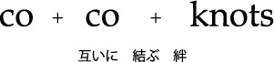

『人びとにとって有用な知識と、正確な情報を伝えることで、健康で健全な社会になっていく』
そう、信じています。
超高齢化社会を迎えたいま、健康や医療への関心はとくに高まっています。そしてインターネットの普及により、膨大な医療情報を誰もが手に入れることが出来るようになりました。
それと引き換えに特定の誰かにとって都合の良い情報や、必ずしも正確ではない情報なども氾濫する社会になりました。そのような現在で患者さんや一般の人びとにとって、
本当に必要な情報は届いているのでしょうか。
人びとが必要な情報を手に入れ、健康に暮らしていく。そんな当たり前のことを実現するために、製薬企業や医療機器メーカーで広報を担ってきた者と、全国紙で
長く医療を担当した記者によってCocoknotsを設立いたしました。
医療機器や医薬品の企業、業界団体、医療機関などの広報戦略の立案から、その実施までをお手伝いいたします。またみなさまが広報活動を展開していく上での
お悩みなどもぜひご相談ください。
社名 [ココノッツ] の由来
coは「一緒に」、「お互いに」といった意味を持つ接頭辞です。Knotは「結び目」です。「絆」、「集団」といった意味もあるそうです。 広報という活動を通じて、企業や団体と社会を結びつけて行きたいという思いから、CocoKnotsという社名にしました。 もう一つ。ココノッツは「９」でもあります。「満れば欠くるは世のならい」と申します。10になることを目指して常に努力したいという気持も込めています。